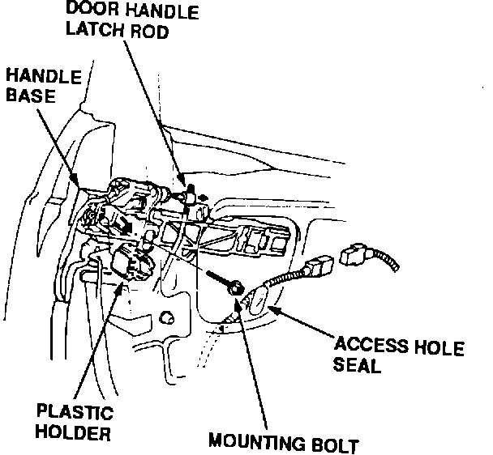

Outer Door Handle - Removal Tips
Legend Outer DoorHandle Removal

When replacing the outer door handle on a '91-92 Legend Sedan, be sure you remove the mounting bolt and the plastic holder from the handle base. Even with the mounting bolt removed, the handle won't come apart properly until you slide off the plastic holder.